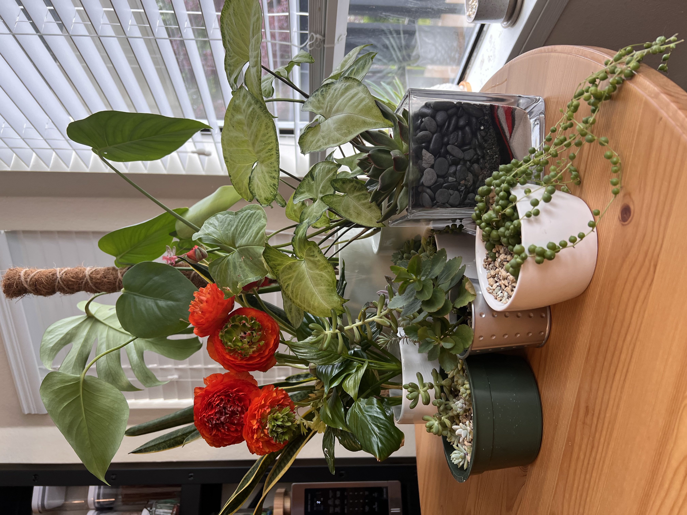

I love hiking in PNW! I still consider myself as a beginner, so most of my hikes are easy or moderate level.
Hikes on Mt. Rainier are my favorite, as there are so many paths and they are all beautiful!
This hike is Tolmie Peak Fire Lookout.
Level: Moderate
Length: 5.6 mi Out & Back
Elevation Gain: 1,541ft
Time: ~3hours
Puzzles!
I love solving puzzles since early childhood, I think that's why programming is so fascinating for me.
This Star Wars puzzle made of 1000 pieces and I completed it twice. Honestly, second time wasn't that easy as I expected.
I love traveling, who doesn't? I visited a few countries, like Turkey, South Korea, UAE, but right now I am focused to visit more states!
My last trip was to Honolulu, Hawaii. The nature is so incredible there!
Another state I am hoping to visit is Alaska.

If I have to choose whether I am a cat person or a dog, I'll definitely say Cat.
I have two cats: Denni is 3 y.o tabby cat and Nora 4 y.o black cat. They are both were taken from a shelter.
I was actually fostering both of them and ended up leaving them with me.
No more fostering since then, as there is a possibility I'll leave another cat with me as well.
I love the photography and really enjoy finding interesting spots to memorize!
I plan one day to take a course on professional photography, but right now I am fine with taking the photos on my phone.
This is a picture of flowers in front of one of the buildings of University of Washington.

I also love flowers, like fresh cut and also indoor plants.
It's so difficult to keep something alive, but I am still trying.
Here is my small garden!